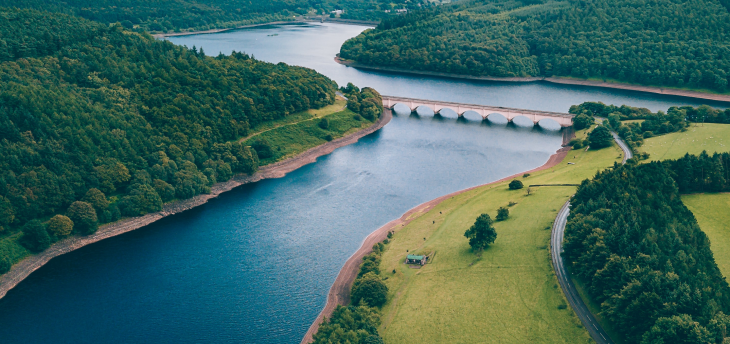

9월 걷기여행길, 차가운 공기를 벗 삼아 걷는 길
강원도 속초 바다향기로는 속초해수욕장(남문)부터 외옹치해변으로 이어져 외옹치활어회센터까지 이어지는 걷기 좋은 길이다. 바다향기로는 크게 데크길과 외옹치해변길 그리고 군 경계 철책 일부가 있는 길로 푸른 바다를 보며 파도 소리를 들으며 걷는 구간이다. 코스 난이도는 낮고 편도로는 3~40분 왕복 1시간30분 정도면 충분히 걸을 수 있다. 자연과 함께 걸으며 분단의 현실과 우리나라 역사의식을 고취시키는 길이다.
가을로 가는 길목에서 남해는 색다른 매력을 자랑한다. 이른바 다도해라 불리며 많은 섬과 함께 거친 해안지형의 아름다움과 이런 자연의 모습과 함께 어우러진 독일마을 같은 독특한 이국적인 풍경을 보여 주는 것이라 할 수 있다. 특히 국내에서 단풍이 가장 늦게 절정을 맞이하다 보니 오히려 조금 늦은 가을에 찾게 되면 바다와 편백나무와 어우러진 숲 그리고 노랗고 붉은 그야말로 다채로운 색상의 남해를 즐길 수 있다.
해 넘어 하늘이 벌걸 때 담치, 홍합, 해삼바래 이고지고 어머니 저 멀리서 오시면 서로 먹을라고 형제들과 다투며 달리던 기억이 납니다
하늘에서 본 지형의 모양새가 앵무새 부리 같아서, 혹은 만에 가득한 몽돌에 파도가 부딪히면 앵무새 울음소리가 나서 앵강이라는 이름이 붙었단다.
앵강만이 아늑하게 품은 건너의 원천마을과 백련마을이 보이고 가까운 바다의 노도, 먼 바다의 솥뚜껑 모양을 한 소치섬이 한눈에 든다.
일상의 무료함을 잠시 내려놓고 심신을 치유 받고 싶은 욕망은 현대를 살아가는 도시인들에게 한결같은 소망이다. 포천 소흘읍에 위치한 국립수목원에 가면 간절한 소망을 이룰 수 있다. 반나절 동안 수목원을 돌아보고 고모리 저수지 카페에서 차 한 잔의 여유를 챙겨보는 것은 어떨까? 달동네박물관에서 추억의 페이지를 넘기듯 과거 속 여행을 떠나도 좋겠다.